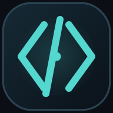

Offline
Connect to keep coding.
PyStudio loads its editor and Python runtime from public CDNs. Reconnect to the internet, then try opening the IDE again.
Your projects are stored in this browser. They are not uploaded to a server.
Try PyStudio again